Designing AI feedback people can trust, with the instructor in the loop
Dance Coach is a practice app for Latin dance teams. Students record themselves against their instructor's reference video, get AI feedback on each practice take, and submit a final take for the instructor to review. I researched and designed it, then built it by directing Claude Code. It runs end to end: an Android app for students, a web dashboard for instructors, and a backend that analyzes movement with pose estimation.

At a glance
- Interviewed 8 instructors and students before and during the build.
- The full loop is deployed and works end to end, tested with real student and instructor accounts.
- Five rounds of accuracy work: a video compared with itself went from a match score of 75 out of 100 to 100, and the gap between a correct and a deliberately wrong take grew from 2.4 to 11.2 points.
- The feedback still wasn't reliable enough to show students unchecked, so I paused building to validate it.
Dance Coach started as practice. My goal was to learn how to build with AI agents, from idea to deployment, on a product I'd actually want to release.
Three outside guides shaped how I worked: the Open Vector curriculum, Anthropic's AI Fluency course, and Google's People + AI Guidebook. Because the goal was learning, I put understanding the concepts and having a clear reason for each design choice ahead of shipping a polished app. This case study covers my work through unit 3 of the curriculum, The Pipeline, which ends with validation. Unit 4, Orchestration, is next.
Open Vector
A curriculum for building with AI agents that sets itself against vibe coding. It has you plan the system first, check what the agent produces, and understand why it works.
AI Fluency
A free Anthropic course, AI Fluency: Framework & Foundations. Its four skills (delegation, description, discernment, and diligence) shaped what I handed to the agent and how I checked its work.
People + AI Guidebook
Google PAIR's design guidance for AI products. I used two of its exercises to check whether AI was the right tool for this need, and to define what the AI must do.
Why dance. I've danced in Boston's Latin dance community for over 8 years, so I could draw on existing relationships for candid research conversations. Dance also fits my interest in health and wellness: it's exercise and community at once.
Full backgroundWhat each guide covered
Open Vector, before any building. The foundation units covered the terminal, Git, deployment, systems thinking, data modeling, and information architecture. They end with a VECTOR.md file: a single document describing the product, which the agent treats as the source of truth.
AI Fluency's four skills, as I applied them:
- Delegation: deciding which work to give the agent and which to keep, such as judgment about dance technique
- Description: writing prompts with enough context and constraints to build the right thing
- Discernment: checking the agent's output instead of trusting it
- Diligence: owning what ships, including security and accuracy
People + AI Guidebook. Two exercises from its User Needs + Defining Success chapter: Evidence of User Need checks whether a need is a good fit for AI, and Specify and Align the AI Problem defines what the AI must do and how it could learn the wrong goal. My answers are in Defining the AI problem.
I started talking with dancers and instructors in my community before I built anything, and kept going as the build progressed. Most conversations were casual, after class or at events. The longer ones I recorded in detail. My first conversations were with an instructor, Lumyr, and two students, Debra and Andres Florez.
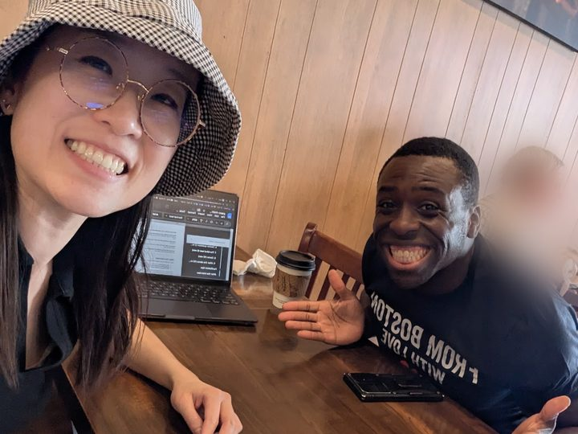
Watches every homework video his team submits each week and types timestamped corrections for each student.
Pays for private lessons and travels to dance workshops to improve her technique with leading instructors. AI that could cover some of that would help her.
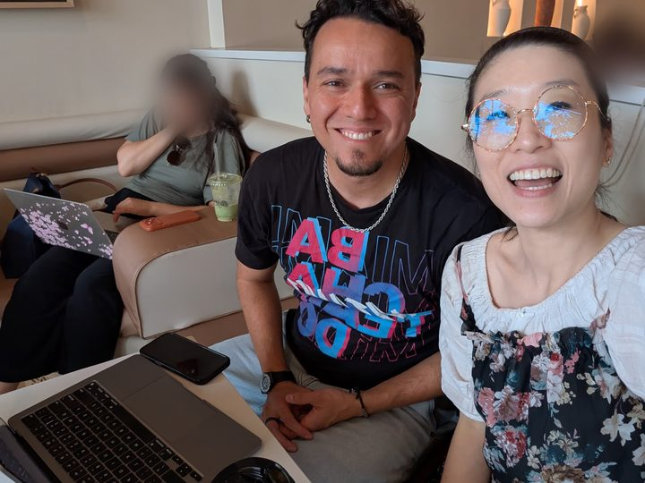
Asked whether instructors would trust AI feedback, and stressed that students need to master the basics first.
My own view. As a team dancer for 8+ years, I recorded my own view too, but kept it as a separate source and left it out of the findings.
What the research found. Instructors already give individual video feedback. What holds students back is the week between corrections, and the money, energy, and time that expert feedback costs any other way. Three findings shaped the product most:
Video homework already exists, but corrections don't always stick
Lumyr watches every homework video and doesn't mind the time. But a correction given once often hasn't taken hold by the next class. So Dance Coach reinforces feedback instructors already give, with an AI check on every practice take in between.
There is no universal correct technique
Each teacher shapes their own standard, and level names don't carry over between studios. So every reference video comes from the studio's own instructor, not a generic model of correct technique.
Instructors want support, not a verdict
Instructors said assessment needs human judgment. So the AI's output is evidence the instructor reviews and releases, with no pass/fail scores.
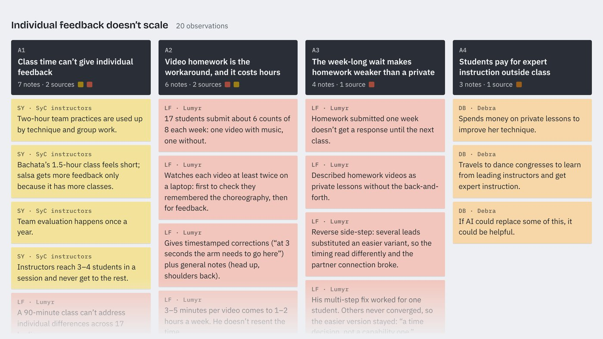
View the affinity mapEvery observation, grouped, with 12 insights, 7 tensions, and evidence gaps. Opens in a new tab.All six findingsThe evidence behind each, and what it meant for the design
Finding | Evidence | What it meant for the design |
|---|---|---|
Video homework already exists, but corrections don't always stick | Lumyr reviews 34 videos a week (1–2 hours) and doesn't resent it, but his fix for one move worked for one student and others never got there. One SyC instructor reviewed about 700 videos. Feedback waits until the next class. | Reinforce feedback instructors already give. An AI check on every practice take covers the week between corrections. |
There is no universal correct technique | Lumyr: technique is a path to a particular look, shaped by each teacher. SyC: level names and teaching differ between studios. | Every reference video comes from the studio's own instructor. A generic "correct salsa" model would contradict how they teach. |
Instructors want support, not a verdict | SyC: assessment needs human judgment. Lumyr would trust another person's read only if they could explain his standard. | The AI output is evidence the instructor reviews and releases. No pass/fail scores. |
Poor accuracy is mostly a recording problem | Angle, distance, lighting, and cramped rooms came up from Ashwin, SyC, Lumyr, and Andres Florez. | Recording guidance and a quality check before submission come before model tuning. |
Instructors review on large screens | Lumyr reviews only on a laptop with two monitors. On a phone he can't see detail or watch and type at once. | Instructors review on a web dashboard, not a second mobile app. |
Students rewatch and repeat; they don't record and compare | Nick drills with a mirror and slowed music. Recording himself wasn't a habit. | Recording and comparing is a new habit. Team obligation is the only force found that would drive it. |
Leveling was the most consistently raised problem, even though I didn't ask about it. Every SyC instructor named "why don't I move up?" as students' top complaint.
Method and constraintsHow I ran the research and what it can support
Conversations happened after class, at events, and in a few scheduled sessions, using Erika Hall's book Just Enough Research as a guide. There was no budget for formal, paid sessions.
- Bias check: my own positions were marked as a separate source in the affinity map.
- Limits: a convenience sample from one scene. Good for deciding what to build and test next, not for sizing a market.
- Method: broke summaries into single observations, grouped them, and rated each insight by how many sources agreed.
Next, I turned the research into jobs to be done: what instructors and students are trying to get done, regardless of any product. I used Open Vector's format, "When [situation], I want to [motivation], so I can [outcome]," and wrote five. Each one is backed by notes in the affinity map.
When I've given a student a correction, I want them to keep practicing it between classes until it sticks, so my feedback actually turns into improvement.
When I'm practicing choreography at home between classes, I want to know where I'm off the count or off the movement, so I can fix it before the next class instead of waiting a week.
When I compare myself to people who started when I did, I want to see what specifically is holding me back, so I can feel I'm progressing rather than stuck.
When a student asks why they haven't moved up, I want to point to clear standards and a record of what I've told them, so I can explain my decision without it feeling personal.
When I dance with my team or a social partner, I want to not be the one who's visibly off, so I don't hold the group back or make a partner's dance harder.
To choose which job to design for, I ranked them with the curriculum's three questions: which happens most often, which is least served today, and which would make users love the product if it were solved perfectly. Job 2 came out on top. It happens every week, and solving it removes the week-long wait for feedback. Jobs 3 and 4 were the least served, and they pointed to a second direction, leveling, which I cover next.
Evidence for each jobWhat supports it, and what it competes with today
Job | Evidence |
|---|---|
1 | Lumyr doesn't mind the 1–2 hours a week he spends on homework videos. What frustrates him is a correction that doesn't take: his fix for one move worked for one student, and others never got there. Hip movement drilled at the start of class disappears once students run the routine. |
2 | Lumyr: homework feedback waits until the next class. Private lessons, the alternative, cost $50–224 an hour. Andres Florez and me: we know there's technique we aren't executing properly, but can't fix it without paying for private lessons. |
3 | SyC: "why don't I move up?" is the top complaint; students expect fast progress and stall. |
4 | SyC: no criteria and no record. Lumyr: documented technique would make placement easier to explain. |
5 | Nick: motivated by group accountability. Andres Florez: poor technique gets partners hurt. Thin evidence. |
What each job competes with today.
- Job 1: repeating the correction at the next class, a week later, or in a paid private lesson.
- Job 2: rewatching the class video, a mirror, and slowed-down music. None of these judges the student against their own instructor's standard.
- Jobs 3 and 4: an ad hoc conversation after class. No product offers placement or a level path.
Ranking the jobsHow each job scored on the three questions
Question from the exercise | Job | Why |
|---|---|---|
Most frequent | 1 and 2 | Both happen every week during the season |
Most underserved | 3 and 4 | Nothing addresses them today: no criteria, no record, no tool |
Would make users love it if solved perfectly | 2 | It removes the week-long wait, the gap students feel most directly |
Job 2, practicing between classes with real feedback, led to my hypothesis: AI movement analysis could help students work on technique between classes, as a supplement to instructors rather than a substitute.
Three observations shaped it:
- Teams already share practice videos, but on a general-purpose tool. Teams post choreography, homework videos, and feedback on Band, a group-messaging app with mobile and desktop versions. Nothing there analyzes the videos.
- AI already assists expert judgment in other fields. AI grading tools in higher education give a first pass that a teacher reviews. I wanted the same model here: the AI does the repetitive work, and the instructor keeps the relationship.
- Pose analysis is common in fitness and rare in dance. Fitness apps use it to check exercise form. Dance is harder to judge because correct form is less constrained.
As interviews continued, several instructors raised a second need: leveling, or deciding when a student in general classes is ready to move up. Every SyC instructor I spoke with (Andres G., Tara, Kelly, and Lumyr) brought it up, and so did Ashwin, a studio owner outside SyC.
I stayed with weekly team choreography for three reasons. A new piece every week gives students a regular reason to come back. The instructor assigns it, so the whole team uses it. And the homework cycle already exists. Leveling, by contrast, is closer to an occasional decision, and each student would have to choose to use it.
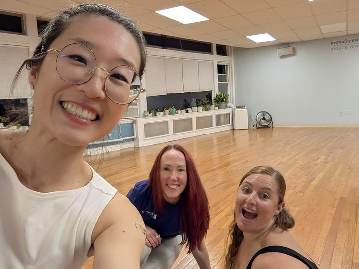
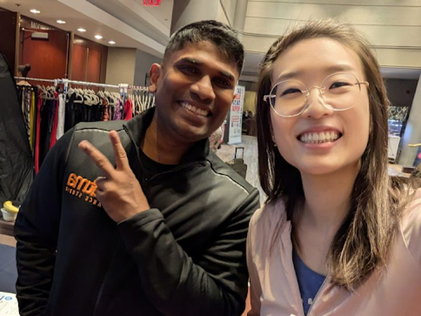
Direction comparisonChoreography vs. fundamentals and leveling
Choreo cleanup | Fundamentals and leveling | |
|---|---|---|
Who | Dance team members | Students in general classes |
How often | Weekly, with each new piece | Self-directed; leveling is occasional |
How it spreads | The instructor assigns it to the team | Each student decides to use it |
Cold start | The homework cycle gives students a reason to open it | Depends on self-motivation |
Why choreography first. Three reasons: recurring weekly use, distribution through the instructor, and an easier cold start. I pushed back on the first reason while deciding. Leveling could also bring students back through progress on fundamentals, and that may be stickier because students choose it themselves. Choreography was the better entry point, with leveling folded in later.
What the build later showed. Comparing two videos filmed on different cameras, in different rooms, at different angles caused most of the accuracy problems. Fundamentals are judged from one video against fixed criteria, with no alignment. SyC's instructors made the same point on their own: single named steps have clean framing and one clear target. The direction that looked harder to grow may have been easier to make accurate.
Before designing, I looked at what dancers use today. I compared eight options: the team's current tool (Band), two online courses, three AI movement-analysis apps, and the two things people fall back on, private lessons and practicing alone. View the full analysis (Google Sheet)
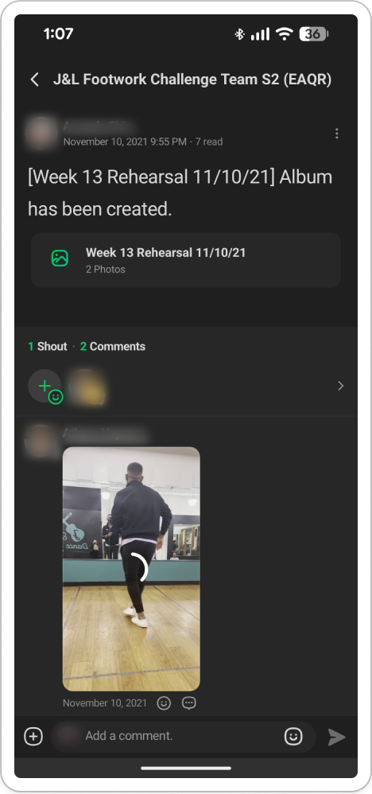
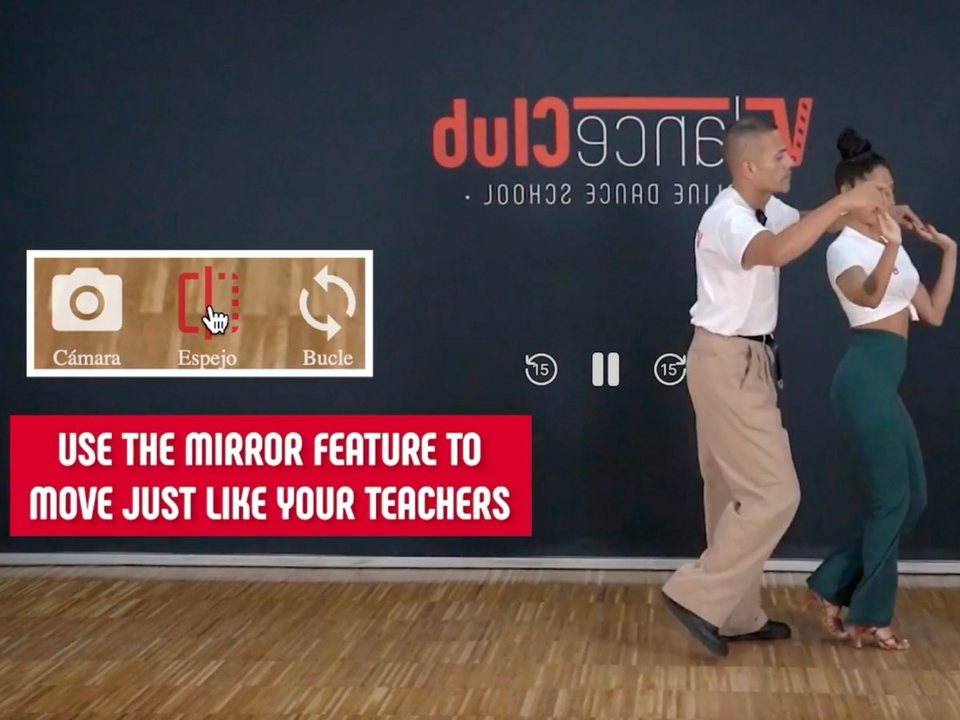
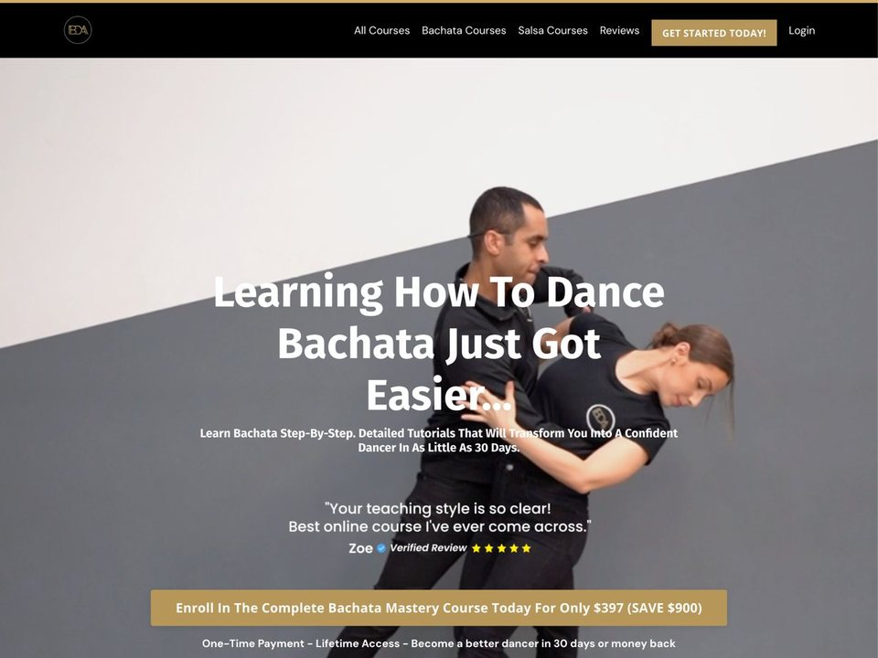
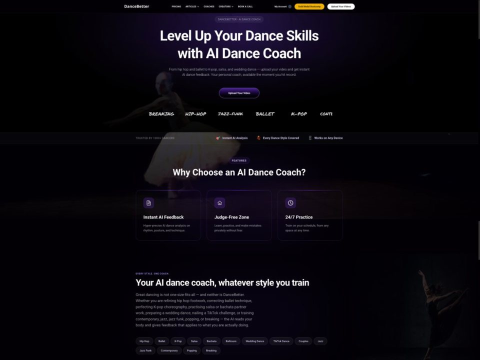
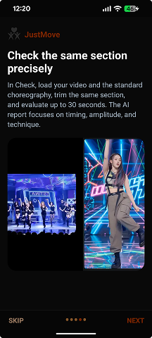
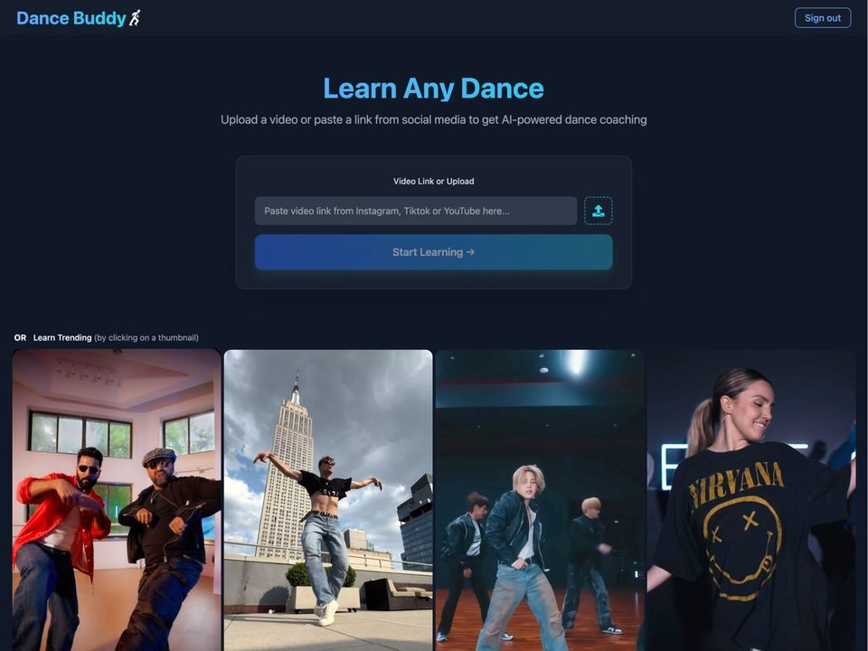
No one combines the studio's own reference, AI feedback, and instructor review
Every AI app is sold to individual learners and compares them against generic dancers, a video they pick, or the original artist's video. None involves the student's own instructor.
AI dance apps haven't shown their feedback is reliable, so the instructor's review is what makes Dance Coach credible
Two of the AI apps didn't build confidence. When I tested DanceBetter, it returned no result after a full day, and DanceBuddy has about 10,000 users but no one paying. An app that offers only AI feedback is hard to trust. In Dance Coach, the student's own instructor reviews the AI's analysis before it's released as formal feedback.
The real competitor is free solo practice, with Band alongside it
Students already rewatch class videos, slow the music down, and practice in a mirror, at no cost. Dance Coach has to offer what solo practice can't: feedback.
All seven takeawaysIncluding partner work, pricing, and player features
- No competitor combines the studio's own reference video, AI feedback, and instructor review. Every AI product is sold to individual learners and compares against generic dancers or a video the learner picks. The closest threat is DanceBetter's quote-only studio tier, which sends AI reports under the coach's name, with no instructor review step and no team assignments. The closest model is JustMove, a K-pop app that compares a student's clip side by side with the original choreography and returns an AI report on timing and technique. Its reference is the artist's video, not the student's instructor.
- AI dance feedback hasn't shown it works or that people will pay for it. DanceBetter has no reviews and no sample output, and in my July test it returned no result after a full day. DanceBuddy has about 10,000 users and no paying customers. Dance Coach's own accuracy isn't reliable yet either, so the instructor review step is what makes the product credible while the model improves.
- The real competitor is free solo practice, with Band alongside it. Students already rewatch class video, slow the music, and use a mirror, at no cost. Band has 4.8 stars from 784k reviews and is already installed, even though students mute it. I still need to decide whether Dance Coach sits next to Band or replaces it.
- Partner work is the largest functional gap. Most team material is partnered, according to Nick and Lumyr, and Dance Coach detects one person.
- The value is speed and cost. Homework feedback through Band takes about a week; private lessons cost $50–224/hr. Dance Coach sits between the two.
- Practice-player features are expected, and mostly missing. VDanceClub and DanceBuddy offer mirror, loop, and 8-count segments. Dance Coach only has speed control.
- No one assesses named fundamentals or offers level placement. Course platforms teach fundamentals but never assess them.
I designed the core loop around job 2. Students practice with AI feedback as often as they want, then send one final take to their instructor, who reviews it before anything formal reaches the student.
The AI feedback runs on MediaPipe, Google's open-source pose-estimation library. It tracks body points such as hips, knees, and shoulders in each video. The backend then compares the student's movement to the instructor's reference, count by count.
- 1Instructor uploads reference video
- 2Assignment published to team
- 3Student records a practice take
- 4AI compares poses, scores each count
- 5Student submits final take
- 6Instructor reviews and adds notes
- 7Instructor releases feedback
- 8Student reads feedback
↺ Students repeat steps 3–4 as often as they want before submitting.
The app follows the format teams already use. Instructors post a counts video (the steps danced to spoken counts instead of music), a music video, or both. Counts videos usually appear only in the first weeks of a season. Students submit one take for each reference video.
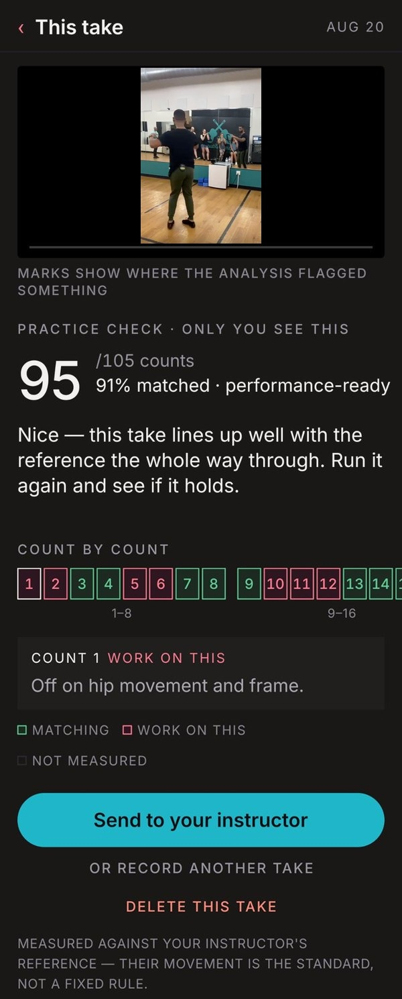
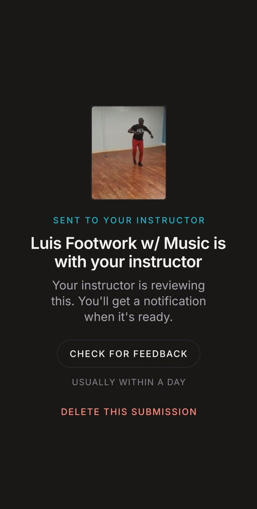
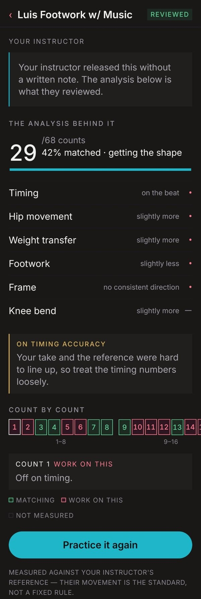
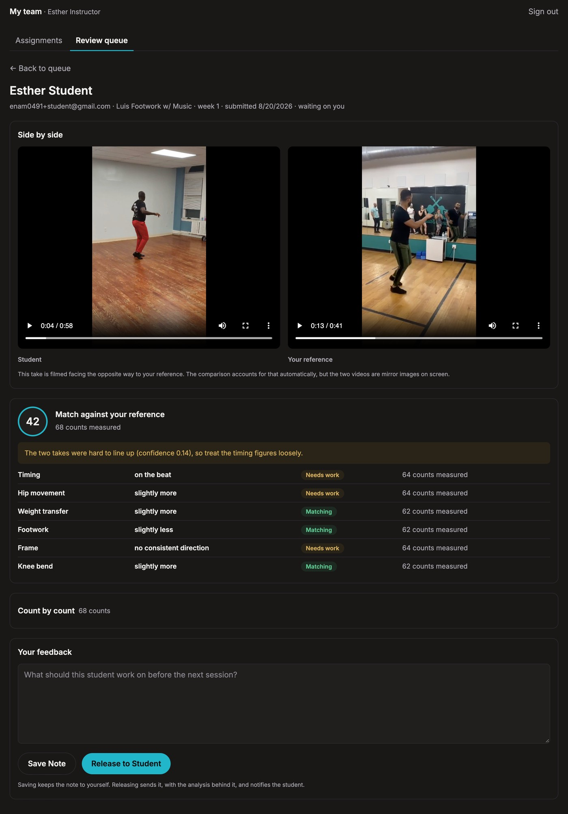
Unlimited AI practice before instructor review
Students get AI feedback on every practice take, so they can work on a correction all week instead of waiting for the next class. Tradeoff: they see AI feedback no instructor has checked, which became the project's central problem.
Students on a mobile app, instructors on a web dashboard
Students record on their phones, and Lumyr reviews only on a laptop with two monitors. The dashboard also works at phone width. Tradeoff: two front ends to build and maintain, and students can't use a laptop yet.
Roles verified on the server
The server, not the app, decides who is an instructor. Otherwise any student could open the review queue and read other students' unreleased feedback. Tradeoff: instructors are set up by hand for now.
Building with Claude Code. My job was to set the plan, give the agent context, and catch it when it was wrong.
How I directed the buildPrompts, the source of truth, doc checks, and an architecture review
A sequence of prompts, run in order. Each prompt was one feature with its dependencies stated: storage, then pose analysis, then the dashboard, then auth. Thirteen prompts produced the working core loop. Any decision that changed a prompt I hadn't run yet had to be flagged, along with what needed updating.
VECTOR.md as the source of truth. One document described the users, the loop, the data model, and the current state. The agent read it at the start of every session, and I updated it after each milestone.
A check that the docs match the code. VECTOR.md once said sign-in was installed and the user and team tables existed. Neither was true. A script now checks the doc's countable claims against the repo (migration count, installed dependencies, API routes).
An architecture review. I asked for a review of the whole system and tracked the results in ARCHITECTURE-DEBT.md, ranked by cost: four items closed, eleven open.
Data model: nouns and verbsWhat the system stores, who acts on it, and how the model changed
Noun | What it is | Verbs |
|---|---|---|
Team | Connects an instructor to their students | Instructor creates it; student joins it |
Choreo piece | A named assignment with a reference video | Instructor uploads and publishes it; student selects and watches it |
Practice take / Submission | A student's take, practice or final | Student records, uploads, practices again, submits |
Analysis | Pose comparison and per-count score | AI scores it; student reviews it during practice; instructor reviews it on a submission |
Instructor note | Feedback on a final take, hidden until released | Instructor writes and releases it; student reads it |
How the model changed. My first nouns-and-verbs exercise (Aug 6) had students review AI feedback, then choose to share it with the instructor and ask questions. I changed it to practice, then submit, so the instructor reviews every final take. "Share AI feedback" and "Ask questions" were dropped, and "Release feedback" was added.
Problems I caughtWhere the agent was wrong, and the production stack
Problem | How I caught it | What changed |
|---|---|---|
Wrong dance knowledge (hip action, weight transfer) | My training as a dancer | Hip action is modeled as a pelvic tilt driven by knee extension. Weight transfer requires foot placement plus torso and hip alignment. |
Android app crashed on upload | Testing on my phone | 720p recording and compression before upload (a 118.7 MB clip became 11.8 MB). No crash since. |
Debug logs never reached a real device | Expected logs were missing | Fixed the logging call release builds drop, and treated every earlier on-device conclusion as unverified. |
Unreleased feedback readable by anyone with the URL | Reviewing API responses | Roles verified on the server |
Storage rejected files over 100 MB | Real student videos | Moved storage from Cloudinary to Cloudflare R2 |
Stack: Expo (Android), React dashboard on Vercel, FastAPI and Postgres on Railway, Cloudflare R2, Clerk, MediaPipe.
How the two files changed34 versions of VECTOR.md and 17 of CLAUDE.md, Aug 2 to Sep 8
Both files are in the project's Git history, so every committed version is recorded. Most changes happened between Aug 7 and Aug 12, while the core loop was being built. VECTOR.md grew from 146 lines to 572, and CLAUDE.md from 50 to 161.
Date | What changed |
|---|---|
Aug 2–4 | CLAUDE.md written for a general coaching app: students upload practice videos and instructors add notes. No VECTOR.md yet. |
Aug 7 | VECTOR.md written, and CLAUDE.md rewritten to match. The product became the reference-video model: the instructor uploads a reference, students practice as often as they want, then submit a final take. Both files added the two feedback tiers. Technique is judged against the instructor's reference rather than fixed thresholds. |
Aug 8 | Current State filled in as the thirteen prompts finished. Either reference video (music or counts) became enough. |
Aug 10 | Storage moved from Cloudinary to Cloudflare R2 because of the 100 MB file limit. The filming rule was replaced by detecting each video's direction, because real footage didn't follow the rule. |
Aug 11–12 | Both files had said sign-in was installed and the user, team and enrollment tables existed. Neither was true. After sign-in was built, I corrected both files and added the script that checks them against the repo. |
Aug 18–20 | Decided every screen should work at both phone and laptop width, with two screen-width breakpoints. |
Sep 8 | Renamed from Paso to Dance Coach. |
What the history shows.
- Most of the growth is recorded decisions, not new features. Current State explains why each choice was made, so a later session doesn't undo it.
- The files were wrong about facts that can be counted. Correcting them by hand didn't stop new errors, so a script now fails when the files and the code disagree.
- The product model was settled on Aug 7. Later edits recorded how the build met real conditions: file sizes, how people actually film, and what release builds log.
With a working prototype, I demoed it to Ashwin and the SyC instructors, went back to Lumyr for a second interview, spoke with another student, Nick, and held a working session with Andres Florez.
I held off on task-based usability tests. With feedback this unreliable, people's reactions would reflect wrong feedback rather than the design. The demos and interviews tested whether the problem and the concept held up.
But when I ran two real student videos through the app, the AI feedback wasn't accurate enough to trust. On Aug 30, I paused feature work to focus on that problem and finish the research pipeline.
Why I paused, and what changed in how I workThe two reasons, and how I split my time afterward
Why I paused. Building had taken almost all my time away from the curriculum's pipeline, and I hadn't yet shown that the feedback was useful.
What changed in how I work. Once building started, almost all my time went to coding and debugging. After Aug 30, I committed at least half my time on the project to user and business research.
The design problem this exposed. When the instructor reviews the AI's notes before releasing them, wrong ones get filtered out. In practice mode, students see the AI's notes with no one checking them.
The instructor's review is what makes the feedback safe, and the practice loop removes it.
How I'll approach it. I'm weighing four options. I'll test recording guidance first. Ashwin, the SyC instructors, Lumyr, and Andres Florez each said poor accuracy was mostly a recording problem, and improving the input doesn't require changing the model.
Accuracy testsWhat improved and what's still unreliable
Results after five rounds of accuracy work, each measured against real takes:
- Same video compared with itself: a match score of 75 out of 100, now 100
- Gap between a correct and a deliberately wrong take: 2.4 points, now 11.2
- Beginner vs. advanced dancer, a live run with Andres Florez: found real differences in the right shoulder, head stability (about 51% more head movement for the beginner), and spine tilt, and flagged core engagement without being asked
Still unreliable.
- Style is scored as error: accent ratio and shoulder ratio measure stylistic choices, not mistakes.
- Some measures are limited by the pose tracking itself. Two differently compressed copies of the same video agreed on weight transfer for only 87.5% of counts, so weight transfer is shown but no longer scored.
- No test yet with deliberately wrong choreography, so the score may be too generous toward it.
- Recording conditions distort results: body type, distance from the camera, lighting, and framing change how large a movement looks.
- A failed pose detection shows as a score of 0, which looks like bad dancing.
- Count numbering assumes count 1 has the most movement, so feedback can name the wrong count.
The key lesson. The beginner-vs-advanced run found the right answer on a case where the answer was already obvious. That is exactly the case where nobody needs the tool, so it doesn't show the AI can be trusted on subtle cases.
Options I'm weighingFour ways to resolve the tension, and which I'll test first
- Show students less than instructors see: only the measures that hold up.
- Say plainly what the AI doesn't judge, such as style and partner connection, and let students dismiss a note.
- Testing first: fix the input with a framing guide while recording and a quality check before submitting ("good to submit" or "fix your lighting").
- Bring in an instructor to say which measures matter and where the AI is wrong.
The first four lessons are about working with Claude Code and the Open Vector method. The last three are about building a product on AI output.
- 01
Plan the system before prompting.
Open Vector's nouns-and-verbs exercise and VECTOR.md gave the agent a specification to build from. "Build me a dance app" would have given it nothing to hold on to.
- 02
Stage the work, and check each step before the next.
I broke the build into a sequence of prompts, one feature at a time, and made sure each one worked before writing the next. When I didn't understand what the agent had built, I asked it to explain before moving on.
- 03
The agent is only as right as the domain knowledge I give it.
It got bachata hip action and weight transfer wrong, and only my experience as a dancer caught that.
- 04
Docs drift from the code unless something checks them.
VECTOR.md said sign-in was built when it wasn't, and one prompt was written on that assumption. A script now checks the doc against the code.
- 05
An AI agent builds fast, so deciding when to stop matters more.
The most important decision in the project was to stop and validate.
- 06
Test AI on the cases that are hard to judge.
In a test with Andres Florez, the analysis correctly found that a beginner moved differently from an advanced dancer. But anyone could see that by eye. The tool earns trust only if it catches the small mistakes a student can't see for themselves.
- 07
Design can make AI feedback safer before it's more accurate.
While the analysis is still unreliable, design choices limit the harm of wrong feedback, starting with an instructor reviewing every note before it's released.
Limits and next stepsWhat works today, and what's next
Works today: the full loop is deployed and works end to end, tested with real student and instructor accounts.
Limits: Android only, though iPhone users are the larger group. MediaPipe tracks one dancer, but teams move to group and partner practice as the season goes on. Not yet useful for intermediate or advanced dancers.
Next:
- Decide how much unchecked AI feedback students see while practicing (the four options in Early validation), before improving the model's accuracy further.
- Run a controlled accuracy test: the same dancer in the same clothes and lighting, including a deliberately wrong take, judged against the success criteria.
- Test recording guidance and a quality check before submitting.
- Test the interface with task-based sessions, using pre-written feedback until the AI is accurate enough.
- Interview more students, including people who left their teams.
- Later: test a library of single steps taken from the current choreography. It could serve both directions from the research: fundamentals practice and choreography cleanup.
Next in the curriculum: Unit 4, Orchestration, covers planning, delegating, checking, and combining work from several AI agents, with quality checks along the way. I'll apply it to the accuracy test and the recording-guidance work.